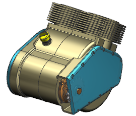
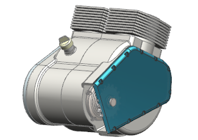
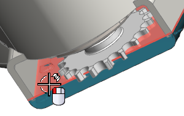
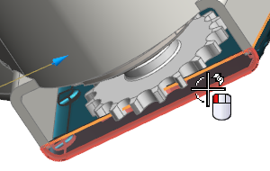
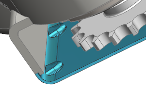

打开 syn3_assembly_engine。
如果已经打开了该部件，请点击打开部件信息框中的更改显示部件。
如果您未完成练习控制相交面的更改，那么您的右箱体与如图所示的可能会有些许不同。

在装配导航器中，右击 syn3_right_cover 并选择设为工作部件。

在同步建模工具条中添加下列按钮：
壳下拉菜单
历史记录模式
无历史记录模式
无历史记录模式 已被选中是因为这个部件是在无历史记录模式中保存的。
在同步建模工具条上的壳下拉菜单中，选择壳体 。
选择如图所示的第一个面。

选择如图所示的第二个面。

在厚度输入框中键入2.5并回车。
为了对体进行抽壳，单击鼠标中键。

|
提示 |
如果您在对话框中看见了激活的<确定>按钮，那么您可以选择其它命令而不用单击鼠标中键来完成当前命令。 |